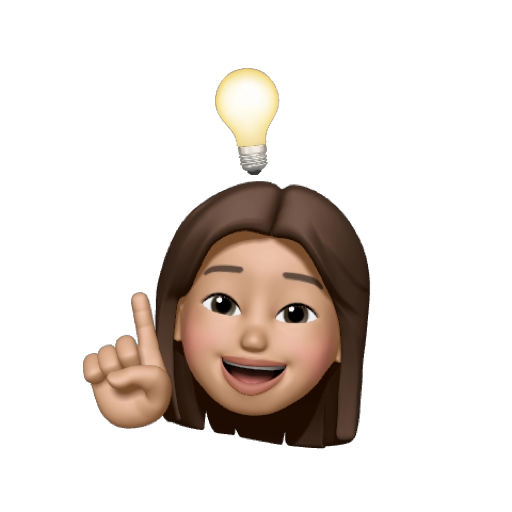

Sobre Mim
Oi! Eu sou a Iara Leodoro, tenho 23 anos e sou uma apaixonada por tecnologia (e café também, confesso ☕). Trabalho como Engenheira de Software, focada em Visão Computacional e Inteligência Artificial 🤖.
Com mais de 4 anos de experiência, já liderei projetos incríveis envolvendo detecção de objetos, reconhecimento facial 🧠 e leitura de placas 🚘 — tudo isso para tornar o mundo um lugar mais seguro e inteligente!
Atualmente lidero um time de devs 💻 e uso tecnologias como C++, Python, OpenCV e YOLO. Amo transformar câmeras comuns em sensores inteligentes, criando soluções reais que impactam o dia a dia das pessoas 📸✨.
Ah, e fora das telas, adoro tocar ukulele 🎶, explorar novos desafios técnicos 🧪 e sou apaixonada pela vida fitness 💪: faço academia 🏋️, natação 🏊 e jiu-jitsu 🥋.
Projetos

FORMAÇÃO ACADÊMICA
Graduação em: Análise e Desenvolvimento de Sistemas
Fatec Garça
Modalidade: Tecnólogo 2020 - 2023
Pós Graduação em: Ciência de Dados e Inteligência Artificial
Unimar
Modalidade: Especialização 2024 - 2025
ALURA: Formação em C++ e Python
Formação completa voltada para desenvolvimento com C++ e Python, abordando fundamentos da linguagem, orientação a objetos, estruturas de dados, projetos práticos e aplicações em ciência de dados.
Modalidade: Formação Online 2020
 Currículo (Português)
Currículo (Português)
 Resume (English)
Resume (English)